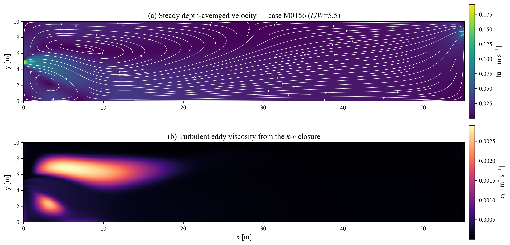
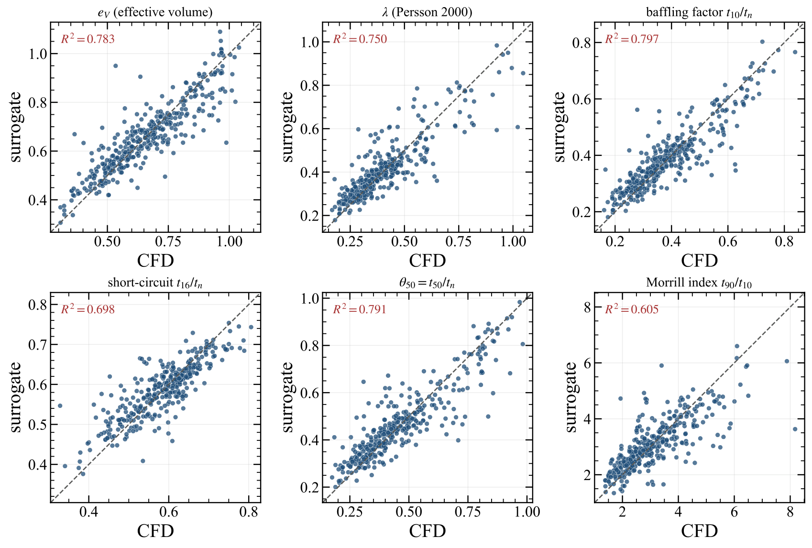
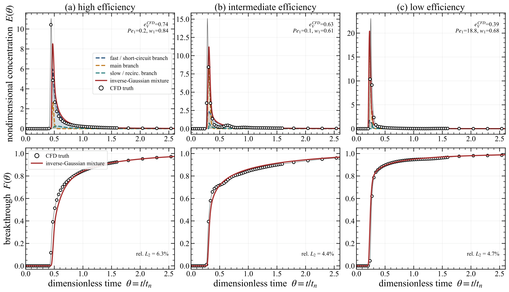
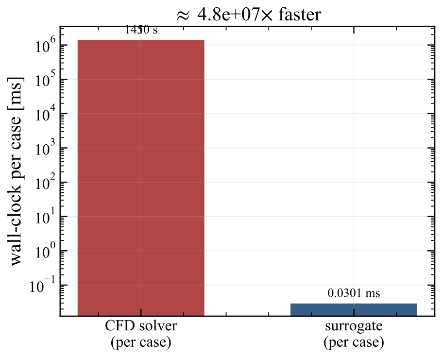

Hydrodynamics
Two-dimensional depth-averaged shallow-water equations with a depth-averaged k-ε turbulence closure.
GPU-accelerated CFD + machine learning
A physics-informed surrogate model for screening the hydraulic performance of free-water-surface constructed wetlands and waste stabilization ponds. It predicts residence-time behaviour and 28 hydraulic-efficiency measures in a fraction of a millisecond, making large design studies practical without running CFD for every candidate.
Treatment performance depends strongly on how water moves from inlet to outlet. Short-circuiting, recirculation, and stagnant zones can reduce the effective treatment volume, while a well-designed flow path improves contact time and hydraulic efficiency. These behaviours are controlled by pond shape, inlet and outlet placement, baffles, and vegetation.
CFD can resolve these processes, but a transient flow simulation followed by a tracer study may take minutes or hours for one layout. That cost limits design exploration. This project uses a GPU solver to generate reliable training data, then learns a much faster mapping from design variables to hydraulic performance.
Nine dimensionless inputs define pond shape, inlet and outlet locations, baffles, and a centred floating vegetation patch.
A two-dimensional shallow-water and k-ε turbulence solver computes the flow, followed by conservative tracer transport.
Gradient-boosted trees predict scalar indices, while a physics-constrained neural model predicts the full residence-time distribution.
New layouts are evaluated almost instantly, enabling sensitivity studies, large parameter sweeps, and future design optimization.

The data generator is a vectorized PyTorch solver designed for a single CUDA-capable GPU. CUDA graph capture reduces launch overhead, while batching allows several geometries to use the GPU efficiently.
Two-dimensional depth-averaged shallow-water equations with a depth-averaged k-ε turbulence closure.
A conservative tracer pulse is transported on the frozen flow field to obtain the outlet residence-time distribution.
Each case returns 28 measures, including effective volume, short-circuiting, baffling factor, dispersion, and residence-time statistics.
The numerical framework is tested against analytical and closed-form benchmarks for flow, turbulence, conservation, and ideal-reactor behaviour.
In benchmark tests, the GPU implementation was about 1.8× faster than the independent C++/OpenMP implementation for one basin and about 16× faster when geometries were batched.
The scalar model predicts 28 established indices used to characterize wetland and pond hydraulics. Across all indices, the median five-fold cross-validated coefficient of determination is R2 = 0.79. Median residence time is predicted especially well, with R2 = 0.94.
A three-branch inverse-Gaussian reactor mixture predicts the full residence-time distribution. Its cumulative breakthrough curve has a median out-of-fold relative error of 3.0%. By construction, every prediction is non-negative, mass-conserving, monotone in cumulative form, and causal.


Once trained, the surrogate evaluates one design in approximately 0.03 milliseconds, compared with a median of about 1,450 seconds for the two-stage CFD workflow. That is roughly a 50-million-fold reduction in evaluation time.
The speed changes the engineering workflow: CFD remains the high-fidelity reference, while the surrogate can screen tens of thousands of possible layouts, identify the most promising candidates, and reserve expensive simulations for final verification.

Compare alternative aspect ratios, port locations, baffle arrangements, and vegetation-patch dimensions before detailed design.
Identify which design variables most strongly control short-circuiting, effective volume, dispersion, and plug-flow behaviour.
Use the surrogate as a future inverse-design engine, then confirm the best candidate layouts with the high-fidelity solver.
The present model applies within its sampled similarity family. Tail-sensitive indices are screening-grade, and designs outside the training range require new CFD data.
Research collaboration
I welcome collaboration on model extension, validation data, and design applications.